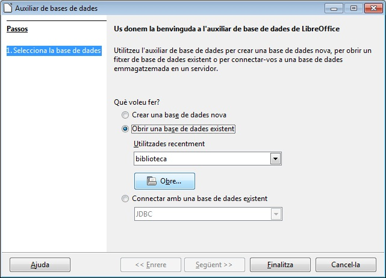
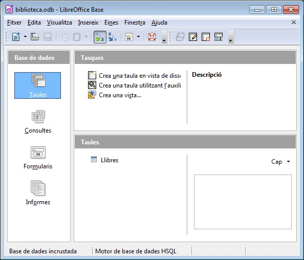
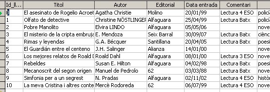

L'Open Base és una aplicació que permet la creació de bases de dades relacionals. Aquest tipus de bases de dades incorpora múltiples objectes relacionats entresi que fa que la informació flueixi d'una forma ràpida i amb uns formats molt còmodes i no difícils de generar.
Els programes de Bases de Dades com és l'Open Base tenen per funció principal la d'organitzar la informació (dades) d'una forma estructurada (o ordenada) per poder després accedir a ella el més còmodament possible.
Open Base esta integrat dintre del paquet ofimàtic Libre Office i això li garanteix una connectivitat molt gran amb la resta d'aplicacions del paquet, així com també la possibilitat de lligar la informació amb programes d'altres aplicacions.
La nostra vida personal i professional està plena de bases de dades, que no són més que blocs d'informació homogènia agrupada i que podem relacionar amb altres blocs amb els que tenen alguna relació.
Exemples de bases de dades: Tota empresa té una base de dades amb els seus clients, tots tenim una agenda en paper o electrònica on emmagatzemem les dades de la gent coneguda…
Per desenvolupar el curs d'una manera molt clara farem servir una base de dades exemple: una Biblioteca, per tal de poder mostrar d'una manera clara tot el que es va explicant.
A l'exemple que farem servir com a fil conductor, la Biblioteca, tenim clar que és un arxiu on tenim una llista dels llibres que té una biblioteca, o al centre de treball… i a més de cada llibre disposem d'una sèrie d'informació (títol, autor, editorial…). I no hem d'oblidar que aquestes bases de dades estan ordenades pel valor d'una de les informacions que tenim dels llibres: per títol, per autor…
El que ens permet una base de dades generada amb Open Base és: emmagatzemar gran quantitat d'informació i poder accedir a ella d'una forma molt ràpida, demanant a l'aplicació que ens doni resposta a les consultes que volguem:
Per fer aquest passeig primer us heu de descarregar el següent arxiu que conté la base de dades Biblioteca.
Descarregueu el fitxer de la Biblioteca:
Finestra d'inici d'Open Base on el que farem en el nostre cas serà obrir la base de dades Biblioteca.

Aquí podem veure la finestra de treball d'Open Base en la que podem observar tres apartats: el de la columna de l'esquerra en la que es mostren els diferents tipus d'objectes que pot contenir una base de dades (taules, consultes, formularis i informes), l'espai superior-dret es mostra la llista d'accions que es pot fer amb el tipus d'objecte seleccionat, i l'espai inferior-dret on es mostra una llista dels diferents objectes creats del tipus indicat. En la següent finestra podem veure que hi ha creada una taula anomenada Llibres i que si polsem sobre els altres tipus d'objectes (Consultes, Formularis, Informes)comprovarem que no hi ha cap més element creat en aquesta base de dades.

Si fem un doble clic sobre el nom de la taula Llibres podem veure el seu contingut.

Un cop estem en aquesta finestra l'usuari pot afegir un nou llibre, eliminar algun llibre, fer una cerca d'un llibre o modificar les dades d'algun llibre.
Com podeu veure en aquesta finestra la taula Llibres conté 11 llibres, i de cadascun d'ells disposem d'una determinada informació (Títol, Autor, Editorial…) estructurada en columnes.

|
|

|
|